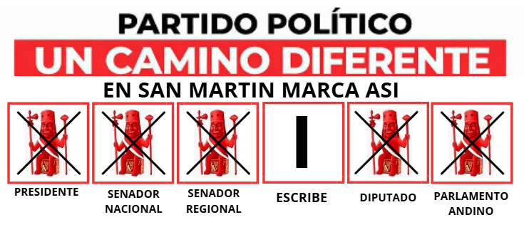

Este 12 de abril, LARRY CÁRDENAS TORRES, #1 AL SENADO REGIONAL POR SAN MARTÍN, se presenta para defender los derechos de nuestra gente y construir un futuro más justo para SAN MARTÍN.
Únete al cambio
Este 12 de abril, apoya al PARTIDO POLÍTICO UN CAMINO DIFERENTE.
✔ Marca los 5 huaquitos del partido.
✔ En Senador Regional, escribe el número 1.
Tu voto ayudará a construir un futuro mejor para SAN MARTÍN.

OBJETIVOSConstruyendo un Perú justo y próspero para todos
Priorizar un sistema de justicia rápido y accesible que garantice el respeto a las leyes.
Empoderar a los ciudadanos para liderar el cambio desde sus comunidades.
Impulsar una formación práctica y moderna enfocada en empleabilidad y valores.
Promover campañas de prevención y acceso a servicios médicos en zonas necesitadas.
Optimizar los recursos públicos para garantizar obras y servicios de calidad.
Desarrollar infraestructura urbana moderna que priorice la seguridad.
Fortalecer las economías regionales con capacitación y acceso al mercado.
Crear programas integrales que fortalezcan el rol de las familias.
Incentivar programas que apoyen a los jóvenes en emprendimientos y liderazgo.
{kind=link}
{kind=link}
{kind=link}
{kind=link}